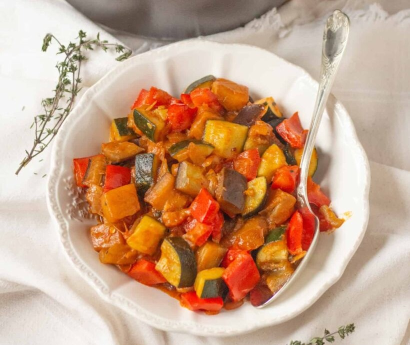

приготовление:
-
Разогреть сковороду. Очистить 2 луковицы и нарезать кубиками. Все овощи для рататуя нарезать кубиками примерно одинакового размера — около 1 × 1 см.
-
Налить на сковороду растительное масло и дать ему разогреться. Выложить лук, посолить и добавить сушёный тимьян. Обжаривать, периодически помешивая, а в это время подготовить помидоры.
-
Вымыть 4 помидора, разрезать пополам, удалить плодоножки и нарезать кубиками. Поставить казан на слабый огонь и переложить в него обжаренный лук. Добавить на сковороду ещё немного растительного масла, выложить помидоры, посолить и обжаривать, периодически помешивая. Вымыть 1 небольшой цуккини и 1 небольшой баклажан, затем нарезать кубиками.
-
Переложить помидоры в казан. Добавить на сковороду немного растительного масла, выложить баклажан и цуккини. Очистить и мелко нарезать 2 зубчика чеснока, добавить к овощам и обжаривать немного дольше, чем предыдущие овощи.
-
Вымыть и очистить 1 сладкий жёлтый перец, удалить семена и нарезать кубиками. Переложить баклажан с цуккини в казан и перемешать. Выложить перец на сковороду, добавить нарезанную петрушку и слегка обжарить. Переложить всё в казан. Добавить в сковороду немного воды, собрать ею оставшиеся кусочки овощей и петрушки и вылить в казан. Накрыть крышкой и тушить на слабом огне около 1 часа.